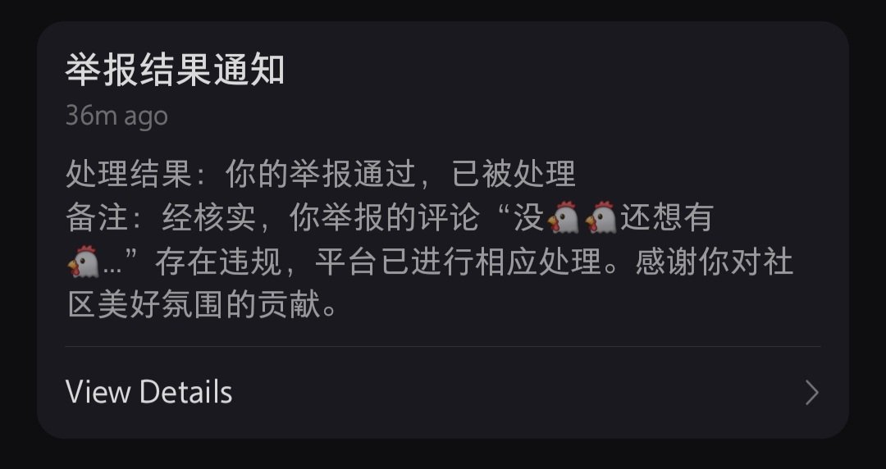
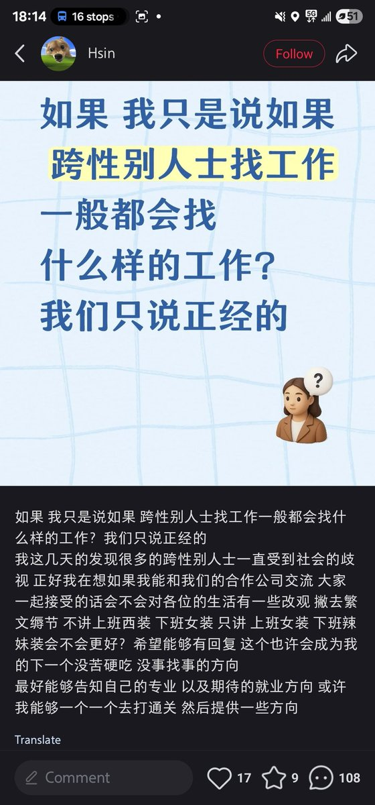
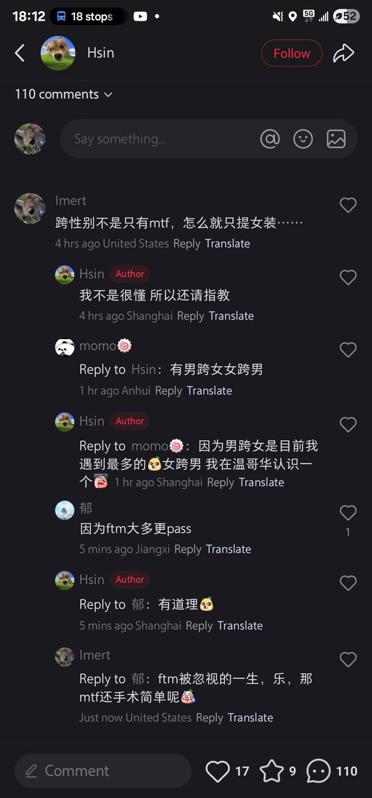

🍊苦橙🍊
@Citrus_amara
@imertphil 宝子你不被在意并非因为你是afab，而是因为你所在的跨性别群体中，mtf最能满足顺直们的猎奇欲因此被拿来放在台面上审视评判，对于mtf来说反而得到了更多曝光机会。我不想评价这个事本身是好是坏，我想告诉你ftm被忽略只是因为傻逼顺直



Imertphil🏳️⚧️
@imertphil
。哥们还能说什么，没招了，ftm被忽略的一生，afab永远无人在意哈。9因为6翻了 https://t.co/wx8AoQQqsB